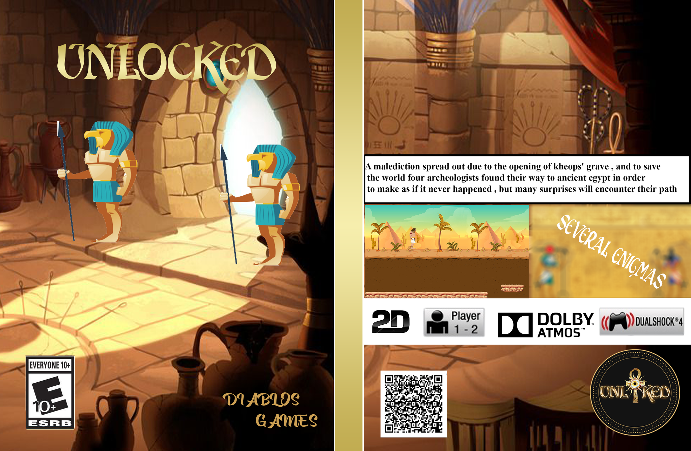

UNLOCKED
SDL GAME in 2D developed on UBUNTU Creation with an electric controller adapted to the game.
a malediction spread out due to the opening of KHEOPS's grave , and to save the world four archeologists found their way to ancient egypt in order to make as if it never happened , but many suprises will encounter their path
The game is centered in ancient Egypt. An archaeologist goes back in time to try to save world by obtaining the wondrous key that allows him to go back to his time.
The game is classified as an adventure game and contains many complex enigmas.
the game have three stages each stage is harder and more complex than the previous one.
You can play the game with keyboard or our electric joystick made from scratch looks like a pyramid and opened with a special key to put you on the mood from the beginning.